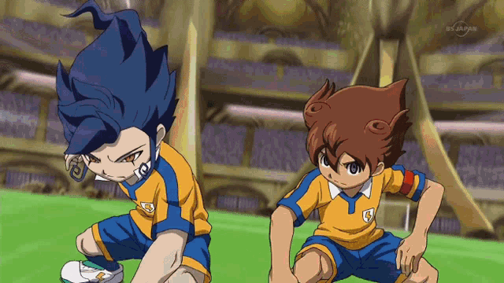
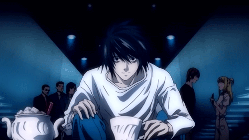
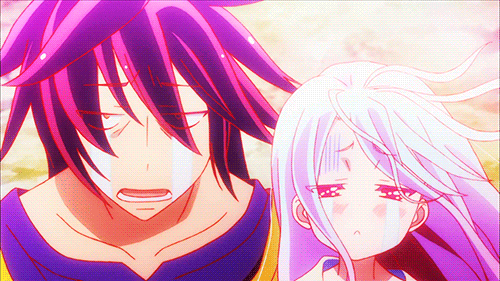
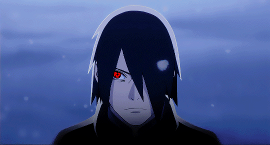
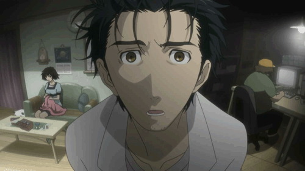

Inazuma Eleven
Inazuma Eleven es una franquicia de medios de comunicación con temática futbolística creada por Level-5.

Death Note
Death Note es una serie de manga escrita por Tsugumi Ōba e ilustrada por Takeshi Obata, y cuya adaptación a serie de anime fue dirigida por Tetsurō Araki.

No Game No Life
No Game No Life es una serie japonesa de novelas ligeras escrita por Yū Kamiya.

Naruto
Naruto, romanizada como NARUTO, es una serie de manga escrita e ilustrada por Masashi Kishimoto.

Steins Gate
Un grupo de amigos ha convertido su microondas en un dispositivo que puede enviar mensajes de texto al pasado.

Hunter x Hunter
Hunter × Hunter, HUNTER×HUNTER, es una serie de manga escrita e ilustrada por Yoshihiro Togashi.